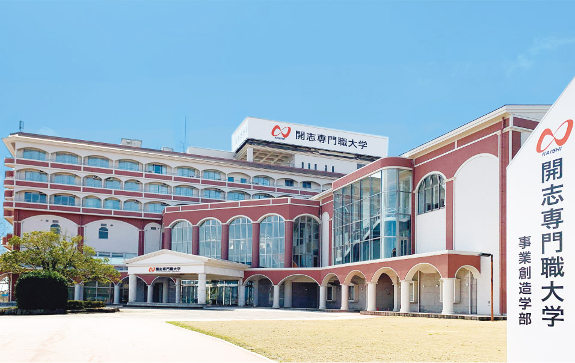

概要
専門職大学とは？
特定の職業のプロフェッショナルになるために必要な知識・理論、そして実践的なスキルの両方を身に付けることができる大学です。
専門職大学等」は、大学制度の中に、実践的な職業教育に重点を置いた仕組みとして制度化するものであり、産業界との密接な連携により、専門職業人材の養成強化を図り、また、大学への進学を希望する方にとっても新たな選択肢が広がるものです。
事業創造学部
他校にはない、 独自の実践型カリキュラム！ 企業・社会に通じる プロフェッショナルの養成を目指す。
情報学部

Design the future 君と社会の未来を創造しよう！アニメ・マンガ学部

ふるまちアカデミーは誕生してまだまだ3年余り。 ただ今、将来構想図ブループリントに沿って発展中！
学部一覧
事業創造学部
01）全教員の50%以上が企業出身。 経営・経済、マーケティング、デジタルの現実と実践を学ぶ！
02）グループワークやプレゼンを通してチームワークとコミュニケーション力を高める！
03）企業のリアルな現場を知る。660時間以上の企業内実習！
04）40人1クラスで、学生一人ひとりの成長をサポート！
05）学生起業やチャレンジを、資金・ノウハウの両面から支援！
開志の提供する「オンリーワン実践型プログラム」
学べる分野
経営／経済／商学／マーケティング／商品企画・開発／ 企業内起業／起業／事業承継／広報・営業／会計・財務
コース
起業家コース
自分の会社を創りたい人、新しいビジネスを始めたい人、家業や既存の事業を継いで経営者を目指す人のためのコース。会社設立･経営のために必要な知識･技能、そしてアントレプレナーシップ（起業家精神）を学び、在学中･卒業後の起業を目指します。経営デザインコース
企業に所属しながら新事業や新商品の開発に挑戦したい人、営業･広報･財務等といった部門運営で力を発揮したい人のためのコース。ビジネスに必要な幅広い知識･技能を学びながら、業界研究で自分の興味を絞り込み、希望する分野･業界に就職、その後の活躍を目指します。
情報学部
01）DXの時代
日本のDXを牽引し、ビジネスの効率化や豊かな暮らしの実現を目指します。02）前進するテクノロジー
日々進化するICTの最先端を捉え、次の時代を拓く高度な技術を開発します。03）文理融合カリキュラム
専門技術に加え、社会や経営などを複合的に学び、社会に役立つDX時代の人材を育成します。
情報学部の学び方
学べる分野
AI／データサイエンス／IoT／ロボティクス／クラウド／ サイバーセキュリティ／プログラミング／システム開発／ メタバース／情報数学／ネットワーク／アーキテクチャ／ データベース／アルゴリズム／情報デザイン／IT系国家資格／ etc…Al ・データサイエンティストコース
コンピュータを用いて人間のような知能を人工的に実現する技術・手法と、データサイエンスの流れを理解し、データから価値を引き出す技術を学びます。loT ・ロボティクスエンジニアコース
センサー機器や車など、モノがネットワークとつながる仕組みと、様々な現場で利用が加速するドローン・ロボットの制御やシステム統合を学びます。クラウドエンジニアコース
クラウドコンピューティングの仕組みやアプリケーション開発手法、セキュリティ対策などクラウドを設計する知識・技術を学びます。サイバーセキュリテイコース
情報セキュリティの原理や設計方法を学び、サイバー攻撃に対抗する技術などを修得し、リスク予防措置やインシデントレスポンスについて学びます。
コース
アニメ・マンガ学部
01）アニメ・マンガの知識と画力を学び、表現力を鍛える
マンガとアニメとが相互に強く結びつきながら展開してきた日本の歴史を、 実際に描くことで体得、その特性を理解し世界に対する新しい表現力を獲得する。02）アニメ・マンガは物語力、脚本力が半分
すべての物語芸術は脚本から始まる。脚本技術だけでなく 物語記号学、世界観の歴史などを学び、物語の深層まで理解する。03）隣接芸術を体験し、感性と可能性を拡げる
映画、演劇、落語などの語り芸も物語を中核とした芸術。 ダンスなどの身体芸術すら、物語を想定して振り付けられる。04）そしてまた、学生たちで学び合う
あなたは多くのライバルに恵まれ、強い刺激を受け、 自分の想像を超える成長を遂げることになるでしょう。
アニメ・マンガ学部の教育プログラム
-
アニメーション分野
絵を描くことが好きで、職業人として社会に認められ、 自分の仕事に誇りをもって、長く活躍したい学生を応援します。 -
マンガ分野
頭の中にあるあなただけのアイディアを構造的に表現された ビジュアル･ナラティブとして描き出す、コマにより設計デザインされた 「世界･キャラクター･ストーリー」。 -
キャラクターデザイン分野
キャラクターとは、愛される伝道師。魅力的なキャラクターが、 アニメ、漫画、映画へと昇華して、人々の想像力を刺激する。 -
脚本・プロデュース領域
-
アニメ・マンガ研究領域
-
出版・3DCG